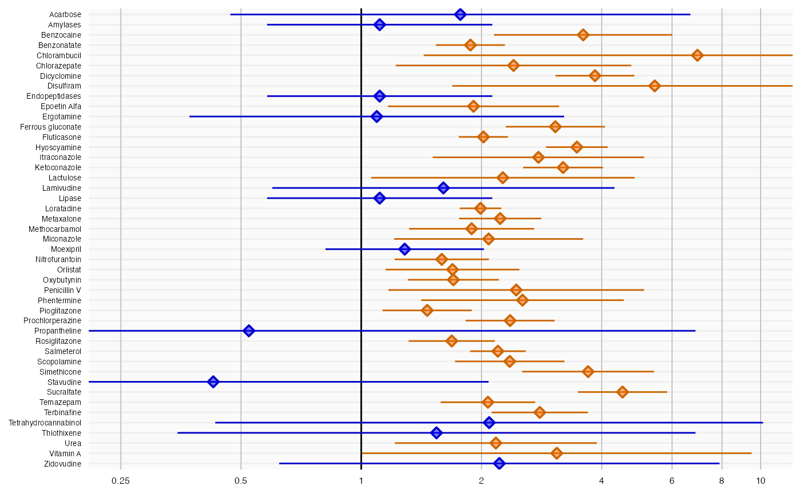
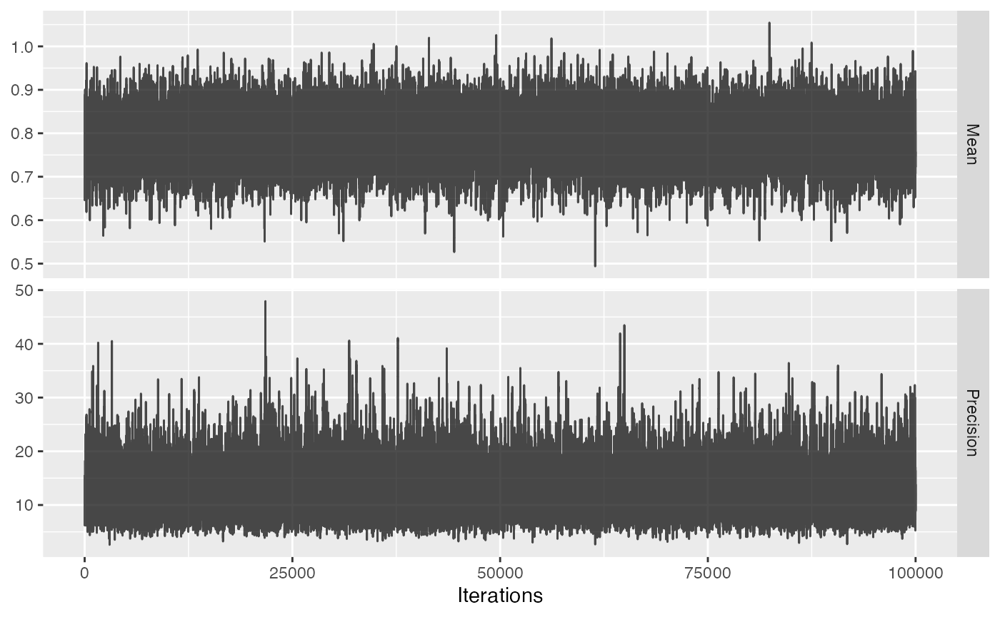

Empirical calibration of p-values
Martijn J. Schuemie, Marc A. Suchard
2024-09-30
Source:vignettes/EmpiricalPCalibrationVignette.Rmd
EmpiricalPCalibrationVignette.RmdIntroduction
In observational studies, there is always the possibility that an effect size estimate is biased. This can be true even for advanced, well thought out study designs, because of unmeasured or unmodeled confounding. Negative controls (test-hypotheses where the exposure is not believed to cause the outcome) can be used to detect the potential for bias in a study, and with enough negative controls we can start to estimate the systematic error distribution inherent in an observational analysis. We can then use this estimated distribution to compute a calibrated p-value, which reflects the probability of observing an effect size estimate when the null hypothesis (of no effect) is true, taking both systematic and random error into account.
In this document we will use an example study to illustrate how this
can be done using the EmpiricalCalibration R package. In
the example, we will try to answer the question whether sertraline (an
SSRI) causes GI bleeding. We use a Self-Controlled Case Series (SCCS)
design, and have applied this to a large insurance claims database.
The results from this study are available in the package, and can be
loaded using the data() command:
data(sccs)
drugOfInterest <- sccs[sccs$groundTruth == 1, ]
drugOfInterest## drugName groundTruth logRr seLogRr
## 6 Sertraline 1 0.7326235 0.07371708
exp(drugOfInterest$logRr)## [1] 2.080532
computeTraditionalP(drugOfInterest$logRr, drugOfInterest$seLogRr)## [1] 0Here we see that the effect estimate for sertraline is 2.1, with a p-value that is so small R rounds it to 0.
Negative controls
Negative controls are drug-outcome pairs where we believe the drug does not cause (or prevent) the outcome. In other words, we believe the true effect size to be a relative risk of 1. We would prefer our negative controls to have some resemblance with out hypothesis of interest (in our example sertraline - GI bleed), and we therefore typically pick negative controls where the outcome is the same (exposure controls), or the exposure is the same (outcome controls). In this example, we have opted for exposure controls, and have identified a set of drugs not believed to cause GI bleed. We have executed exactly the same analysis for these exposures, resulting in a set of effect size estimates, one per negative control:
## drugName groundTruth logRr seLogRr
## 1 Thiothixene 0 0.4339021 0.7617538
## 2 Methocarbamol 0 0.6363184 0.1839892
## 4 Phentermine 0 0.9297549 0.2979802
## 5 Disulfiram 0 1.6919273 0.5955222
## 7 Orlistat 0 0.5261691 0.1967199
## 8 Prochlorperazine 0 0.8581890 0.1308460Plot negative control effect sizes
We can start by creating a forest plot of our negative controls:
plotForest(negatives$logRr, negatives$seLogRr, negatives$drugName)
Here we see that many negative controls have a confidence interval that does not include a relative risk of 1 (orange lines), certainly more than the expected 5%. This indicates the analysis has systematic error.
Empirical null distribution
Fitting the null distribution
We can use the negative controls to estimate the systematic error distribution. We assume the distribution is a Gaussian distribution, which we have found to give good performance in the past.
null <- fitNull(negatives$logRr, negatives$seLogRr)
null## Estimated null distribution
##
## Estimate
## Mean 0.7920
## SD 0.2835We see that the mean of our distribution is greater than 0, indicating the analysis is positively biased. We also see the standard deviation is greater than 0.25, indicating there is considerable variability in the systematic error from one estimate to the next.
Evaluating the calibration
To evaluate whether our estimation of the systematic error distribution is a good one, we can test whether the calibrated p-value is truly calibrated, meaning the fraction of negative controls with a p-value below alpha is approximately the same as alpha:
plotCalibration(negatives$logRr,negatives$seLogRr)
This method uses a leave-one-out design: for every negative control, the null distribution is fitted using all other negative controls, and the calibrated p-value for that negative control is computed.
In the graph we see that the calibrated p-value is much closer to the diagonal than the uncalibrated p-value.
Plotting the null distribution
We can create a graphical representation of the null distribution, together with the negative controls used to estimate that distribution:
plotCalibrationEffect(negatives$logRr,negatives$seLogRr, null = null)## Warning: Removed 1 row containing missing values or values outside the scale range
## (`geom_vline()`).
In this graph, the blue dots represent the negative controls. Any estimates below the gray dashed lines will have a traditional p-value below .05. In contrast, only estimates that fall within the orange areas will have a calibrated p-value below .05.
P-value calibration
Calibrating the p-value
We can now use the estimated null distribution to compute the calibrated p-value for our drug of interest:
p <- calibrateP(null, drugOfInterest$logRr, drugOfInterest$seLogRr)
p## [1] 0.839405In this case, the calibrated p-value is 0.84, meaning we have very little confidence we can reject the null hypothesis.
Plotting the null distribution
A visual representation of the calibration makes it clear why we are no longer certain we can reject the null hypothesis:
plotCalibrationEffect(negatives$logRr,
negatives$seLogRr,
drugOfInterest$logRr,
drugOfInterest$seLogRr,
null)## Warning: Removed 1 row containing missing values or values outside the scale range
## (`geom_vline()`).In this plot we see that, even though the drug of interest (the yellow diamond) has a high relative risk, it is indistinguishable from our negative controls.
Computing the credible interval
Depending on how much information we have in terms of number of
negative controls, or precision of those negative controls, we will be
more or less certain about the parameters of the null distribution and
therefore about the calibrated p-value. To estimate our uncertainty we
can compute the 95% credible interval using Markov Chain Monte Carlo
(MCMC). We can apply the fitMcmcNull function for this
purpose:
null <- fitMcmcNull(negatives$logRr, negatives$seLogRr)
null## Estimated null distribution (using MCMC)
##
## Estimate lower .95 upper .95
## Mean 0.79140 0.66974 0.9053
## Precision 11.91267 6.04624 23.2171
##
## Acceptance rate: 0.3259967400326We see that there is uncertainty around the estimates of the mean and precision (= 1/SD^2), as expressed in the 95% credible intervals. This uncertainty can be reduced by either increasing the number of negative controls, or by increasing the power for the existing controls (e.g. by waiting for more data to accumulate).
The acceptance rate of the MCMC seems reasonable (ideal values are typically between 0.2 and 0.6), but we can investigate the trace just to be sure:
plotMcmcTrace(null)
For both variables the trace should look like ‘random noise’, as is the case above. When we see auto-correlation, meaning that one value of the trace depends on the previous value of the trace, the MCMC might not be reliable and we should not trust the 95% credible interval.
We can use the new null object to compute the calibrated p-value as well as the 95% credible interval:
p <- calibrateP(null, drugOfInterest$logRr, drugOfInterest$seLogRr)
p## p lb95ci ub95ci
## 1 0.8359202 0.5466381 0.99161Note that there is uncertainty around the calibrated p-value as expressed in the 95% credible interval.
We can also visualize the uncertainty in the p-value calibration by plotting the 95% credible interval of the boundary where calibrated p = 0.05, here indicated by the red band:
plotCalibrationEffect(negatives$logRr,
negatives$seLogRr,
drugOfInterest$logRr,
drugOfInterest$seLogRr,
null,
showCis = TRUE)## Warning: Removed 1 row containing missing values or values outside the scale range
## (`geom_vline()`).
References
citation("EmpiricalCalibration")## To cite EmpiricalCalibration in publications use:
##
## Schuemie MJ, Ryan PB, DuMouchel W, Suchard MA, Madigan D (2013).
## "Interpreting observational studies: why empirical calibration is
## needed to correct p-values." _Statistics in Medicine_, *33*(2),
## 209-218. <http://dx.doi.org/10.1002/sim.5925>.
##
## Schuemie MJ, Hripcsak G, Ryan PB, Madigan D, Suchard MA (2018).
## "Empirical confidence interval calibration for population-level
## effect estimation studies in observational healthcare data." _Proc.
## Natl. Acad. Sci. U.S.A._, *115*(11), 2571-2577.
## <https://doi.org/10.1073/pnas.1708282114>.
##
## To see these entries in BibTeX format, use 'print(<citation>,
## bibtex=TRUE)', 'toBibtex(.)', or set
## 'options(citation.bibtex.max=999)'.